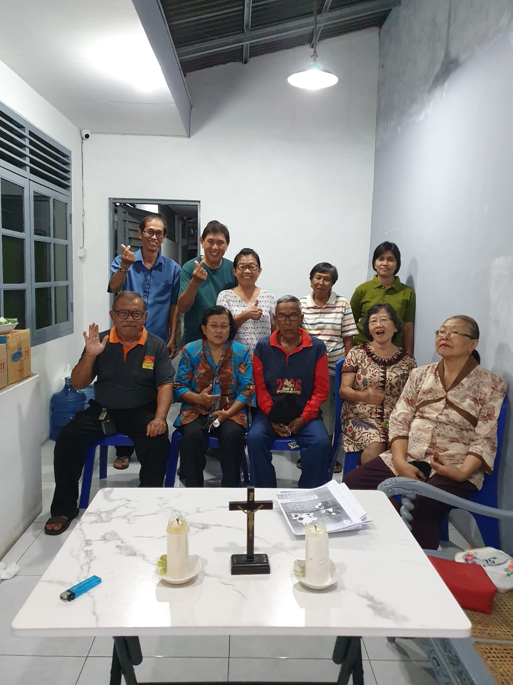
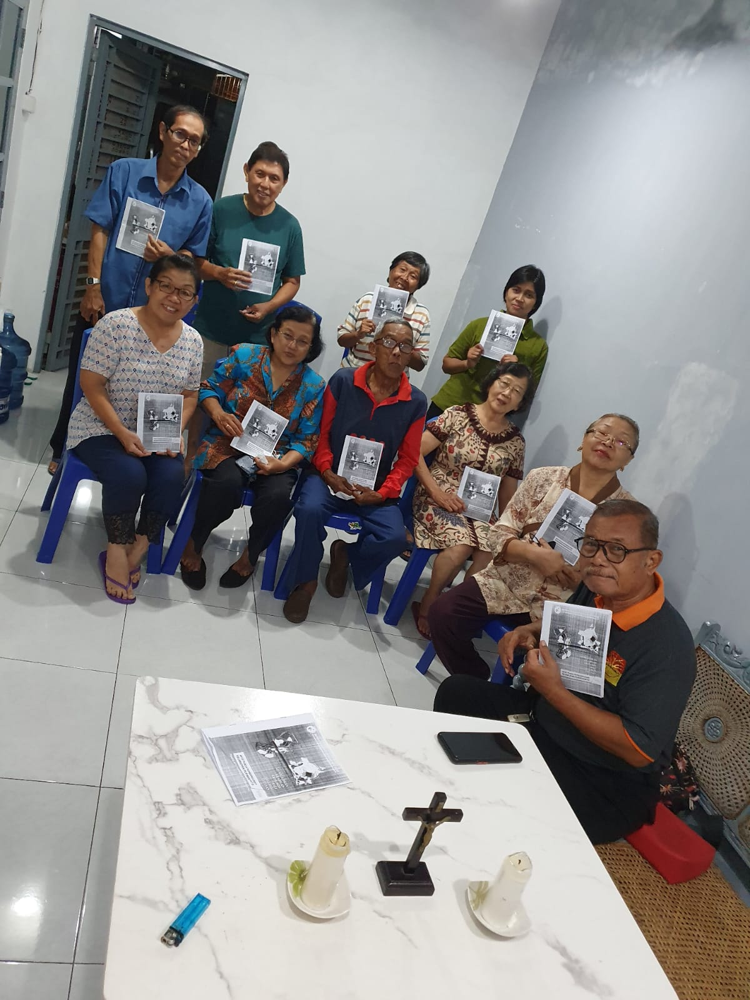
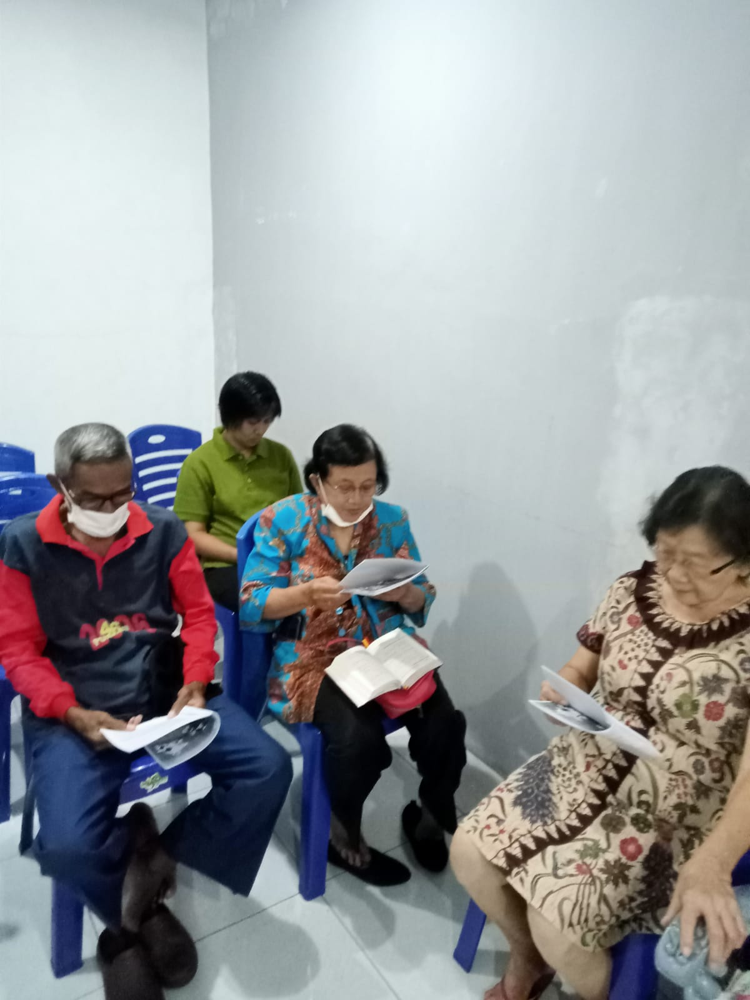
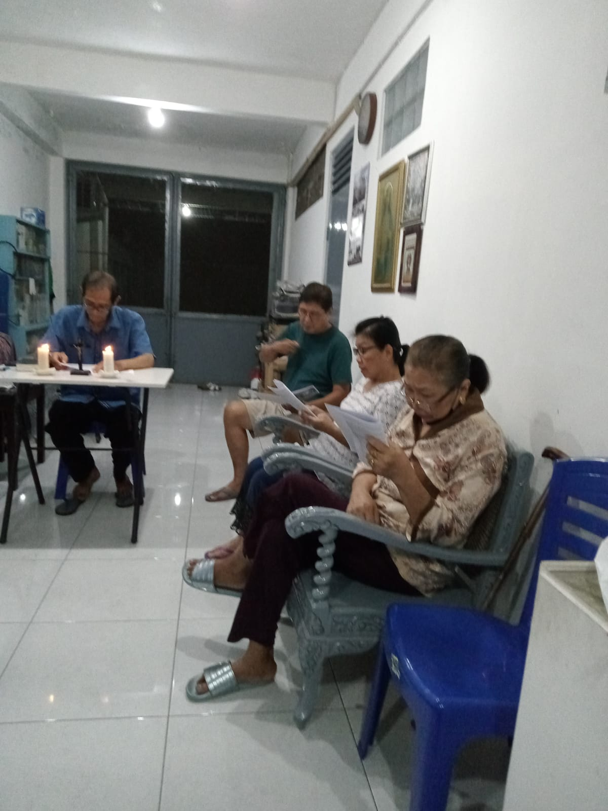
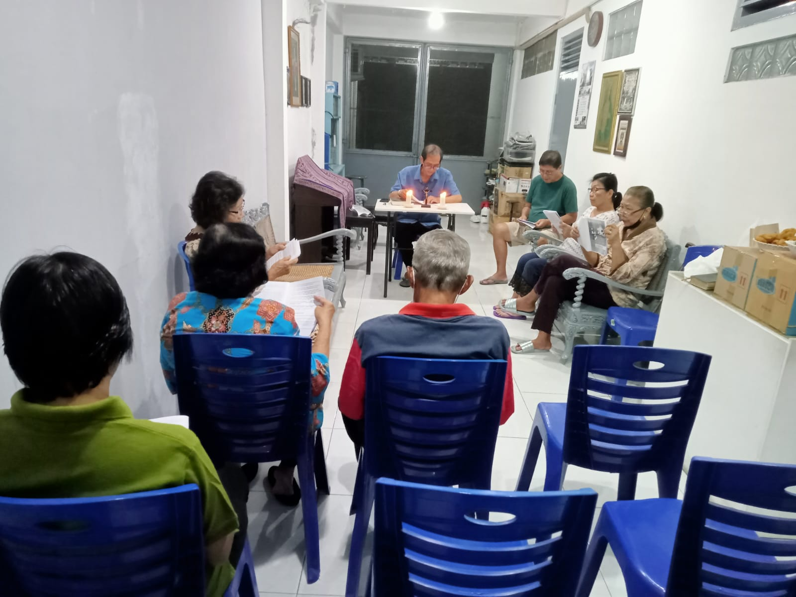

Pendalaman Iman APP ke 4
|  |  |  |
|  |  |
PERTEMUAN IV “ MENJAGA KEUTUHAN CIPTAAN SEBAGAI PANGGILAN ORANG BERIMAN ”
Pengantar
Dalam suatu kesempatan, Paus Fransiskus menjelaskan “sebuah sensus sains solid” menunjukkan bahwa pemanasan global itu nyata, dan akan mengurangi ketersediaan air minum, merusak pertanian, menyebabkan kepunahan hewan dan tumbuhan, meningkatkan keasaman laut dan menaikkan permukaan air laut yang menyebabkan kebanjiran di kota-kota besar dunia. Ia mengaitkan perubahan iklim terjadi secara alami, tetapi penelitian menunjukkan bahwa pemanasan global “terutama” disebabkan oleh aktivitas manusia. Bumi sebagai rumah bersama ini mengalami kerusakan dan sedang menjerit karena segala kerusakan yang tejadi di dalamnya akibat penyalahgunaan yang tidak bertanggungjawab (bdk. LS,2). Penghancuran lingkungan manusia merupakan perkara sangat berat, tidak hanya karena Allah telah mempercayakan dunia kepada manusia, tetapi karena hidup manusia itu sendiri merupakan anugerah yang harus dilindungi dari berbagai bentuk kemerosotan (bdk. LS, 5). Oleh karena itu dalam permenungan kedua ini kita ingin menyadari bahwa menjaga keutuhan ciptaan adalah salah satu bagian dari panggilan hidup kita sebagai umat beriman katolik di Keuskupan Purwokerto dalam merespon jeritan bumi yang sedang menderita karena kerusakan yang terjadi.
Inspirasi Kitab Suci : Luk 12 : 13 – 21
12:13 Seorang dari orang banyak itu berkata kepada Yesus: “Guru, katakanlah kepada saudaraku supaya ia berbagi warisan dengan aku.”
12:14 Tetapi Yesus berkata kepadanya: “Saudara, siapakah yang telah mengangkat Aku menjadi hakim atau pengantara atas kamu?”
12:15 Kata-Nya lagi kepada mereka: “Berjaga-jagalah dan waspadalah terhadap segala ketamakan , sebab walaupun seorang berlimpah-limpah hartanya, hidupnya tidaklah tergantung dari pada kekayaannya itu.
12:16 Kemudian Ia mengatakan kepada mereka suatu perumpamaan, kata-Nya:”Ada seorang kaya, tanahnya berlimpah-limpah hasilnya.
12:17 Ia bertanya dalam hatinya: Apakah yang harus aku perbuat, sebab aku tidak mempunyai tempat di mana aku dapat menyimpan hasil tanahku.
12:18 Lalu katanya: Inilah yang akan aku perbuat; aku akan merombak lumbung-lumbungku dan aku akan mendirikan yang lebih besar dan aku akan menyimpan di dalamnya segala gandum dan barang-barangku.
12:19 Sesudah itu aku akan berkata kepada jiwaku: Jiwaku, ada padamu banyak barang, tertimbun untuk bertahun-tahun lamanya; beristirahatlah, makanlah, minumlah dan bersenang-senanglah!
12:20 Tetapi firman Allah kepadanya: Hai engkau orang bodoh, pada malam ini juga jiwamu akan diambil dari padamu, dan apa yang telah kausediakan, untuk siapakah itu nanti?
12:21 Demikianlah jadinya dengan orang yang mengumpulkan harta bagi dirinya sendiri, jikalau ia tidak kaya di hadapan Allah.
Pertanyaan Renungan/Sharing
- Kata atau kalimat mana yang berkesan dari Sabda yang kita renungkan hari ini?
- Mengapa Yesus mengingatkan kita untuk berjaga-jaga dan waspada terhadap segala ketamakan ?
- Apakah ada bentuk-bentuk ketamaka/kerakusann disekitar kita yang justru semakin membuat bumi dan alam sekitar menjadi rusak?
- Menurut anda bagaimana cara mengungkapkan rasa syukur atas bumi tempat kita hidup?
RENUNGAN / PENEGASAN
Butir-butir permenungan/penegasan:
- Kisah ini menunjukkan bahwa Orang kaya dalam perikop ini jatuh dalam mentalitas egoisme diri. Dia tidak pernah bersyukur sedikit pun atas kekayaan yang dimilikinya sebagai sarana rahmat untuk berbagi. Dia hanya berpikir bahwa semua kekayaan itu hanya memiliki tujuan untuk memuaskan dirinya sendiri. Hal ini terungkap dengan jelas dari kata-kata orang kaya itu, “Jiwaku, ada padamu banyak barang, tertimbun untuk bertahun-tahun lamanya; beristirahatlah, makanlah, minumlah dan bersenang-senanglah!” (ay. 19b). Dia melupakan fungsi sosial dari harta kekayaan tersebut. Dia tidak mau berbagi dan tidak mau menjadikan harta kekayaan sebagai sarana untuk berbagi berkat dan kasih kepada sesama untuk mendapatkan kepenuhan hidup.
- Dari kisah ini kita dapat melihat bahwa hidup manusia dapat dibutakan oleh ketamakan dan harta kekayaan. Manusia melupakan tujuan utama hidup ini yaitu mengalami kepenuhan bersama dengan Allah, Sang Pencipta, di mana harta kekayaan hanyalah sarana untuk mencapai kepenuhan hidup ini. Ketamakan yang menjadi kewaspadaan dalam pengajaran Yesus menjadi sikap yang tanpa batas mengeruk dan mengekploitasi bumi alam semesta untuk kekayaan sendiri. Hal ini menunjukan bahwa Yesus sedang memperingatkan semua orang lewat permintaanda dari satu orang. Ketamakan adalah sikap duniawi yang cenderung dimiliki manusia. Ketamakan yang diumpamakan Yesus adalah ketamakan terhadap harta benda dunia dengan berpusat pada diri sendiri tanpa memikirkan kehidupan selanjutnya. Jadi, ketamakan akan hal dunia memungkinkan orang yang menerapkannya akan jatuh ke dalam kebinasaan, karena manusia seharusnya kaya di hadapan Allah bukan kaya di dalam diri sendiri (Luk. 12:20-21).
- Dari perikop Injil Lukas 12:13-21 kita bisa belajar dan merefleksikan tentang dunia ini. Dunia ini adalah tempat kita tinggal dan hidup untuk mempersiapkan hidup yang akan datang, yaitu keselamatan bersama Allah, Sang Pencipta (aspek eskatologis). Oleh karena itu, kita dipanggil menjaga, merawat dan memelihara alam semesta ini, baik untuk kita saat ini maupun untuk generasi-generasi yang akan datang. Harta kekayaan yang diberikan oleh Allah yang Mahapemurah harus memiliki aspek sosial dalam hidup ini melalui tindakan karitatif dengan membantu semakin banyak orang – terutama yang miskin, menderita dan terpinggirkan – supaya membawa pada kepenuhan hidup yang mulia. Relasi harmonis manusia dengan sesama, alam ciptaan dan terlebih dengan Tuhan menjadi aspek utama dalam membingkai hidup ini untuk terus merawat, memelihara dan menjaga alam ciptaan yang telah dikaruniakan Allah kepada kita.
- Jeritan bumi yang menangis karena mengalami kerusakan berakar pada krisis iman yang terjadi karena relasi manusia dengan Sang Pencipta, antara sesama manusia dan manusia dengan ciptaan lainnya terganggu akibat dosa ekologis. Kerusakan alam disebabkan oleh manusia yang tidak peduli lagi pada kehendak Allah (Pencipta). Paus Fransiskus menegaskanan bahwa “penyalahgunaan ciptaan dimulai ketika kita tidak lagi melihat apapun kecuali diri kita sendiri” (lih. LS, 6;8). Sikap ini adalah ancaman yang paling serius bagi seluruh ciptaan yang telah dirancang dengan baik dan bijaksana oleh sang Pencipta.
- Motivasi kita untuk memelihara lingkungan bukan sekedar karena diperlukan untuk menopang hidup manusia dan demi kesejahteraan manusia, Karena motivasi panggilan ini akan membuat kita jatuh kedalam sikap materialisme yang terbukti merusak lingkungan. Kalau manusia memelihara lingkungan karena sekedar kecintaan pada lingkungan, maka manusia akan jatuh kedalam romantisme belaka. Motivas manusia untuk memelihara lingkungan hidup harus dilandasi ungkapan syukur pada Allah Sang Pencipta yang telah mengaruniakan alam semesta dengan segala kekayaan di dalamnya untuk menopang kesejahteraan manusia. Juga sebagai tanda syukur kita atas pembaharuan dan penebusan yang telah dilakukan Allah melalui pengurbanan Yesus Kristus. Maka memelihara lingkungan dan menjaga keutuhan ciptaan merupakan perwujudan iman kita kepada Allah yang solidaritas terhadap manusia dan alam semesta. Menjaga Keutuhan ciptaan dan pemulihan kembali alam yang rusak mesti dilakukan oleh manusia sebagai wujud pertobatan sejati.
Sharing Pengalaman dan Rencana Aksi
Saudara-saudari terkasih, setelah diterangi Sabda Allah mari kita melihat bagaimana kondisi Jeritan Bumi yang menderita di Keuskupan Purwokerto karena kebencanaan yang terjadi beberapa waktu lalu. Kesadaran untuk melepaskan ketamakan dan keegeoisan menjadi awal melaksanakan panggilan untuk menjaga keutuhan ciptaan dalam merespon jeritan Bumi dan lingkungan alam di wilayah Keuskupan Purwokerto. (bisa diputarkan video/rangkaian foto berita kebencanaan di wilayah keuksupan Purwokerto akibat perubahan iklim): 1. Bencana alam apa yang rentan terjadi wilayah paroki dan keuskupan kita? 2. Bagaimana upaya kita sebagai umat katolik mencegah terjadinya bencana alam dan melaksanakan aksi solidaritas penanggulangan bencana alam yang terjadi di sekitar kita? 3. Gerakan/Aksi/Tindakan apa yang akan dimulai atau dikembangkan oleh keluarga dan komunitas basis dalam masa Prapaskah 2023 untuk mencegah terjadinya bencana alam sebagai bentuk upaya mejaga keutuhan ciptaan sebagaimana diamanatkan dalam Visi-Misi Keuskupan kita?
Materi tulisan dari Buku Pendalaman APP 2023 yang disusun oleh Panitia APP Keuskupan Purwokerto